Destek Portalı, Parla Bilgi Teknolojileri'nden aldığınız SAP destek hizmetini tek bir yerden yönetmeniz için hazırlanmış web uygulamasıdır. Telefon ve e-posta trafiğine gerek kalmadan taleplerinizi açar, durumlarını izler ve danışmanlarımızla talebin içinden yazışırsınız.
Sorununuzu ilgili SAP modülü, öncelik ve ekran görüntüleriyle tek formda bildirin.
Her talebin durumunu, atanan danışmanı ve geçmişi anlık görün; değişikliklerde e-posta alın.
Danışmanınızla talebin içinden konuşun; tüm yazışma ve dosyalar tek kayıtta kalsın.
Çözümü test edin; sorun giderildiyse kapanışı siz onaylayın, sürüyorsa yeniden açın.
Sizden bir işlem beklendiğinde bildirim zilinde ve e-postanızda uyarı görürsünüz.
Verileriniz yalnızca size ve ilgili Parla BT ekibine açıktır; dosyalarınız da öyle.
Hesaplar Parla BT tarafından oluşturulur; kendi başınıza kayıt olamazsınız. Hesabınızın rolü, neleri görebileceğinizi belirler:
| Rol | Ne yapabilir? | Hangi talepleri görür? |
|---|---|---|
| Müşteri Kullanıcısı | Talep açar, yanıtlar, kapanışı onaylar veya yeniden açar. | Yalnızca kendi açtığı talepler. |
| Firma Yöneticisi | Müşteri kullanıcısının tüm yetkileri; ayrıca firmanın diğer taleplerini izler ve yanıtlar. | Firmanın tüm talepleri. |
| Arızi Müşteri | Destek sözleşmesi olmayan firmalar için, talep tipi varsayılan olarak “Arızi Talep” gelir. | Yalnızca kendi talepleri. |
Tarayıcı olarak Chrome, Edge, Firefox veya Safari'nin güncel sürümlerini kullanın. Bilgisayar, tablet ve telefonda çalışır; ekran görüntüleri bu kılavuzda bilgisayar görünümüyle verilmiştir.
Hesabınız oluşturulduğunda Parla BT ekibi giriş bilgilerinizi (e-posta adresiniz ve geçici şifreniz) size iletir; genellikle e-posta ile. Portal adresi: www.parlabilgiteknolojileri.net/support
Tarayıcınıza portal adresini yazın veya giriş bilgilerinizin geldiği e-postadaki Portala giriş yap bağlantısına tıklayın.
E-posta alanına hesabınıza bağlı adresi, Şifre alanına geçici şifrenizi yazın. Şifreyi görmek için alanın sağındaki göz simgesine tıklayabilirsiniz.
Giriş Yap düğmesine tıklayın veya Enter tuşuna basın. Birkaç saniye içinde sayfası açılır.
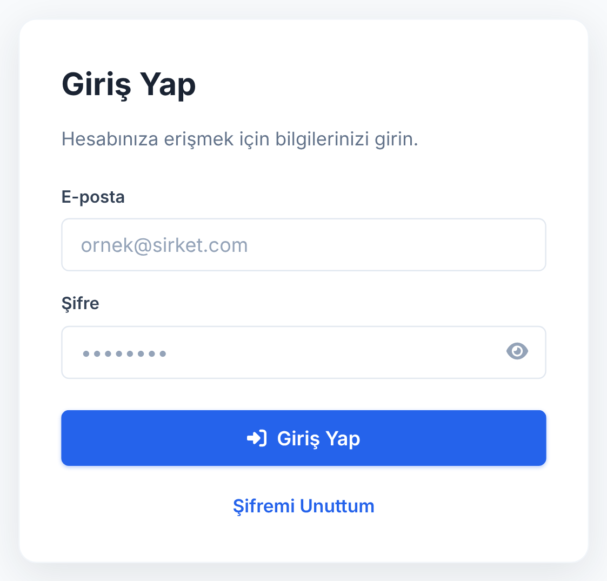
12345Giriş yapamıyorsanız önce Caps Lock tuşunun kapalı olduğundan emin olun; şifre büyük/küçük harfe duyarlıdır. Birkaç başarısız denemeden sonra hesap kısa süre kilitlenebilir — beklemeniz yeterlidir.
Şifrenizi kimseyle paylaşmayın. Parla BT çalışanları sizden şifrenizi hiçbir zaman istemez.
Hesabınız geçici bir şifreyle açıldığı için ilk girişinizde portal sizi otomatik olarak Şifrenizi belirleyin sayfasına yönlendirir. Yeni şifrenizi belirlemeden portalın diğer bölümlerini kullanamazsınız.
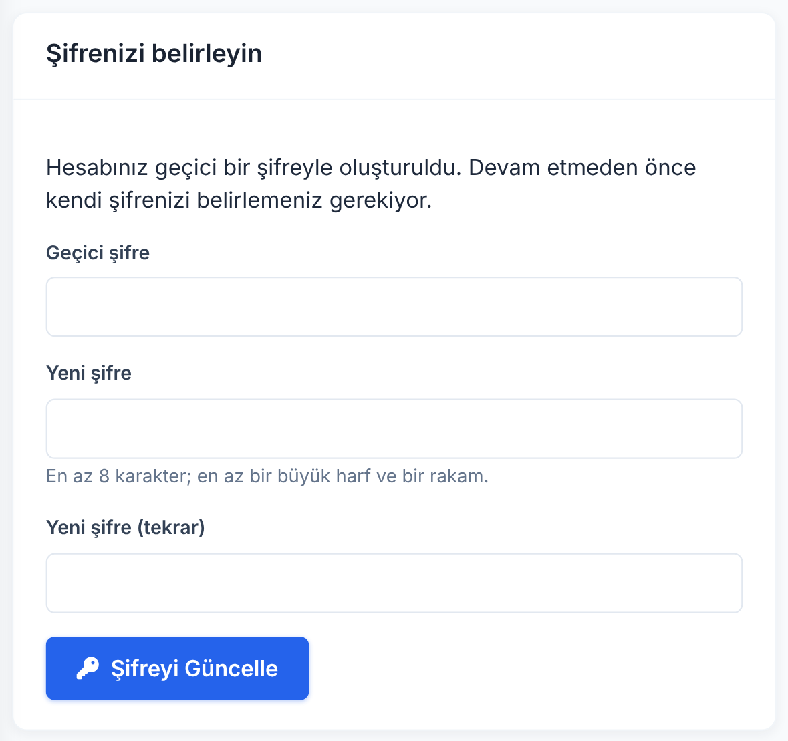
1234| Şifre kuralı | Açıklama |
|---|---|
| Uzunluk | En az 8 karakter. |
| Büyük harf | En az bir büyük harf (A–Z). |
| Rakam | En az bir rakam (0–9). |
| Farklı olmalı | Yeni şifre geçici şifreyle aynı olamaz. |
Giriş sayfasında e-posta adresinizi yazın ve Şifremi Unuttum bağlantısına tıklayın.
Birkaç dakika içinde sıfırlama bağlantısı içeren bir e-posta alırsınız. Gelmediyse gereksiz (spam) klasörüne bakın.
E-postadaki bağlantı Yeni Şifre Belirle sayfasını açar. Şifrenizi iki kez yazıp Şifreyi Kaydet düğmesine tıklayın, ardından yeni şifrenizle giriş yapın.
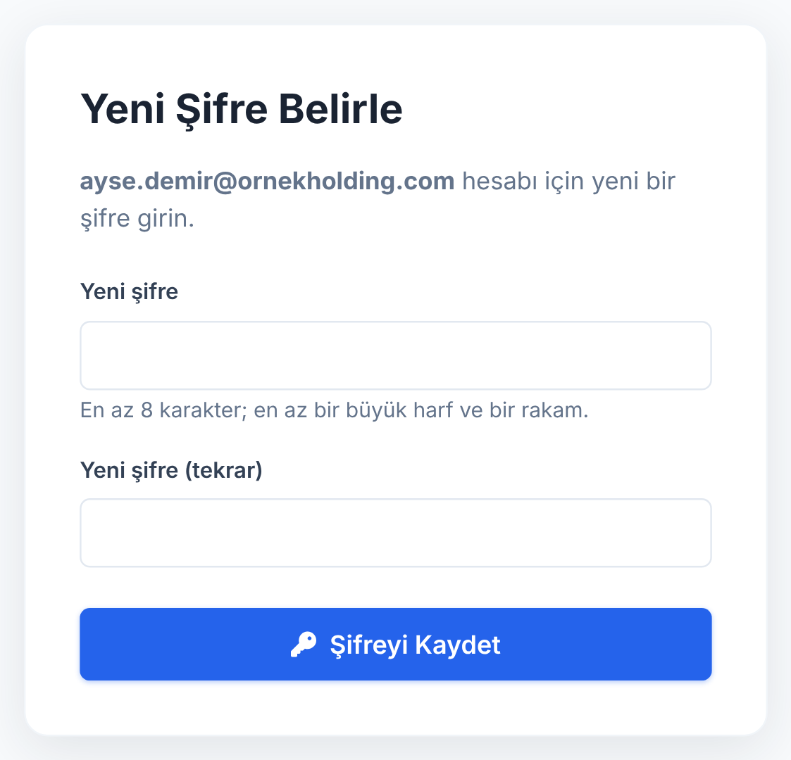
123Sıfırlama bağlantısı sınırlı süre geçerlidir ve yalnızca bir kez kullanılabilir. Süresi dolduysa giriş sayfasından yeni bir bağlantı isteyin.
Giriş yaptığınızda ilk olarak Genel Bakış sayfasını görürsünüz. Ekran üç ana bölgeden oluşur: soldaki menü, üstteki başlık çubuğu ve ortadaki çalışma alanı.
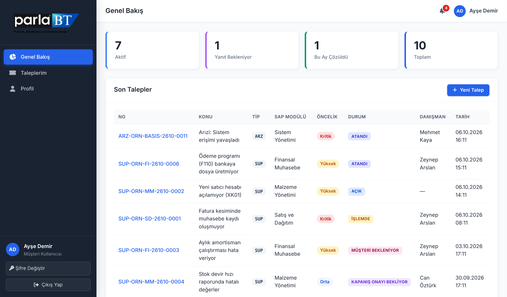
12345678Bu kılavuza istediğiniz an ulaşabilirsiniz: giriş sayfasındaki Kılavuzlar bölümünden, menünün altındaki Kullanıcı Kılavuzu satırından ya da üst çubuktaki Kılavuz düğmesinden. Yanındaki indirme simgesi PDF'i bilgisayarınıza kaydeder.
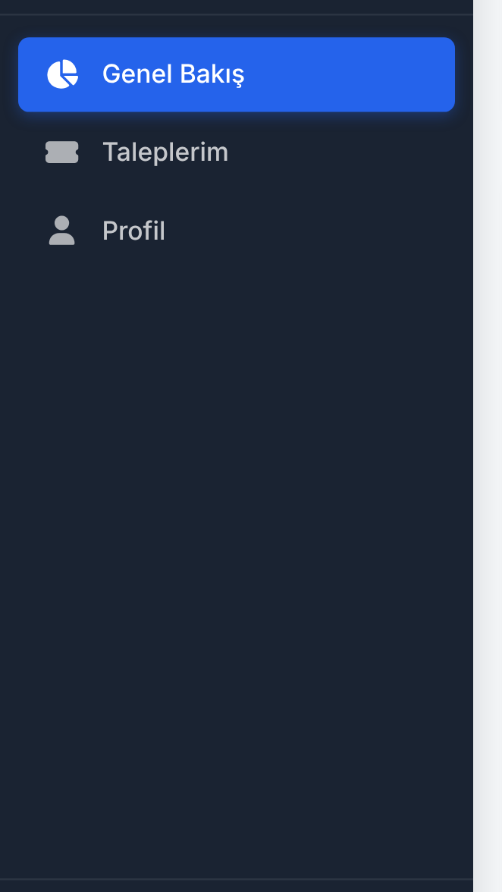
1234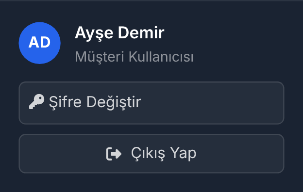
123Talep formu, danışmanınızın sorunu ilk okumada anlayıp çalışmaya başlaması için tasarlandı. Alanları ne kadar eksiksiz doldurursanız çözüm o kadar hızlı gelir.
Genel Bakış veya Taleplerim sayfasının sağ üstündeki + Yeni Talep düğmesine tıklayın. Form bir pencere olarak açılır.
Talep tipi, öncelik, SAP modülü, konu ve açıklamayı girin. Zorunlu alanlar boş bırakılırsa gönderemezsiniz; kırmızı uyarı hangi alanın eksik olduğunu gösterir.
Dosya Ekle düğmesiyle ekran görüntüsü veya belge ekleyin.
Talebi Gönder düğmesine tıklayın. Talebiniz oluşturulur ve ekranın üstünde “Talebiniz başarıyla oluşturuldu” mesajı görünür.
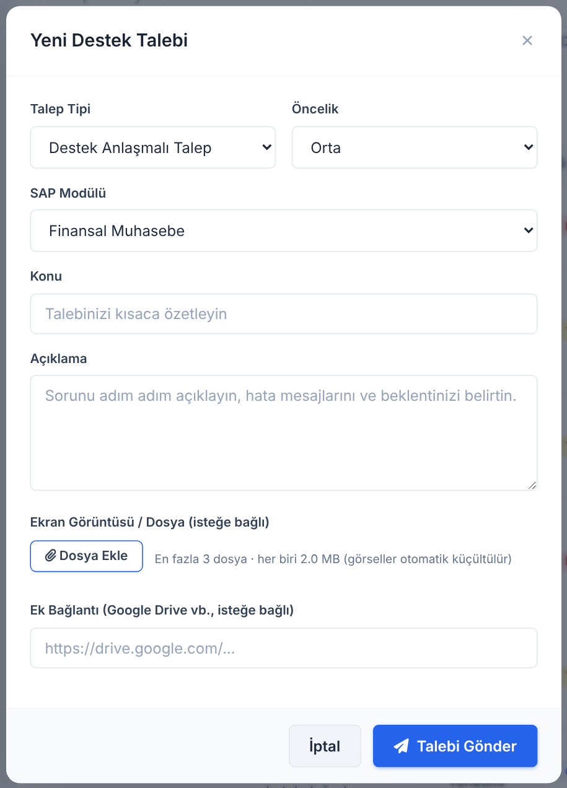
12345678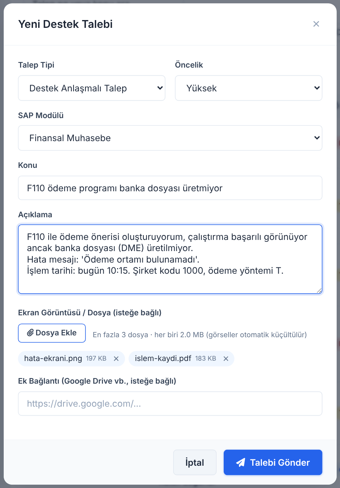
1234| Alan | Ne yazmalı / seçmeli? | Zorunlu mu? |
|---|---|---|
| Talep Tipi | Çoğu durumda Destek Anlaşmalı Talep. Aşağıdaki tabloya bakın. | Zorunlu |
| Öncelik | Sorunun işinize etkisine göre Düşük, Orta, Yüksek veya Kritik. | Zorunlu |
| SAP Modülü | Sorunun ilişkili olduğu modül (FI, MM, SD ...). Emin değilseniz Diğer. | Zorunlu |
| Konu | 5–100 karakter. Sorunu bir cümleyle özetleyin: “Fatura kesiminde vergi kodu hatası”. | Zorunlu |
| Açıklama | En az 20 karakter. Ne yapmaya çalışıyordunuz, hangi hata mesajını gördünüz, ne bekliyordunuz? | Zorunlu |
| Ekran Görüntüsü / Dosya | En fazla 3 dosya; her biri en çok 2 MB. | İsteğe bağlı |
| Ek Bağlantı | Büyük dosyalar için paylaşım bağlantısı (https:// ile başlamalı). | İsteğe bağlı |
İki seçim, talebin ne kadar hızlı ve kimin tarafından ele alınacağını belirler. Doğru seçim sizin de lehinizedir.
| Tip | Ne zaman seçilir? | Örnek |
|---|---|---|
| SUP — Destek Anlaşmalı Talep | Destek sözleşmeniz kapsamındaki günlük sorular, hatalar ve küçük değişiklikler. | “XK01 ile satıcı açamıyorum.” |
| ARZ — Arızi Talep | Destek sözleşmesi kapsamında olmayan, tek seferlik hizmet gereken durumlar (Arızi müşteri hesaplarında varsayılan). | “Eski modülde tek seferlik rapor düzeltmesi.” |
| BUG — Hata / Problem Kaydı | Daha önce çalışan bir özelliğin beklenmedik şekilde bozulması. | “Dünkü transport sonrası fatura belgesi oluşmuyor.” |
Beklenebilir. Çalışmanızı engellemiyor; iyileştirme veya soru.
Çalışmayı zorlaştırıyor ama geçici çözümle devam edebiliyorsunuz.
Önemli bir iş süreci aksıyor; aynı gün içinde çözüm gerekiyor.
Üretim/ödeme/fatura gibi kritik süreç tamamen durdu; çok sayıda kullanıcı etkileniyor.
Kritik öncelik yalnızca iş sürekliliğini ciddi biçimde tehdit eden durumlar içindir. Kritik talep açtıktan sonra danışmanlarımızı ayrıca telefonla da arayın: +90 530 226 77 98.
Emin değilseniz bir alt seviyeyi seçip açıklamada etkisini yazın (“10 kullanıcı etkileniyor”, “ay sonu kapanışı yarın”). Danışmanınız gerekirse önceliği yükseltir.
Modül, talebin doğru uzmana ulaşmasını sağlar ve talep numarasının bir parçası olur.
| Modül | Kapsamı |
|---|---|
| FIFinansal Muhasebe | Genel defter, alacak/borç hesapları, ödeme programı, duran varlıklar, dönem kapanışı. |
| COYönetim Muhasebesi | Maliyet merkezleri, iç siparişler, kârlılık analizi, bütçe raporları. |
| MMMalzeme Yönetimi | Satın alma, stok, envanter, tedarikçi (satıcı) ana verisi. |
| SDSatış ve Dağıtım | Satış siparişi, sevkiyat, faturalama, fiyatlandırma. |
| PPÜretim Planlama | Üretim siparişleri, ürün ağaçları, iş yeri, planlama. |
| WMDepo Yönetimi | Depo, raf, transfer emirleri. |
| HRİnsan Kaynakları | Personel yönetimi, bordro, zaman yönetimi. |
| BASISSistem Yönetimi | Kullanıcı ve yetkiler, performans, transport, Fiori/GUI erişimi. |
| ABAPGeliştirme | Özel raporlar, ekranlar, arayüzler, formlar. |
| Diğer | Yukarıdakilere girmeyen veya emin olmadığınız konular. |
Hata mesajının ekran görüntüsü, çoğu zaman bin kelimeden değerlidir. Talep oluştururken ve sonraki her yanıtınızda dosya ekleyebilirsiniz.
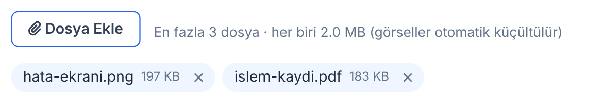
123| Dosya türü | Uzantılar | Not |
|---|---|---|
| Görseller | .png .jpg .jpeg .gif .webp | Büyük görseller otomatik olarak küçültülür ve sıkıştırılır; okunabilirlik korunur. |
| Olduğu gibi yüklenir. | ||
| Office belgeleri | .doc .docx .xls .xlsx .ppt .pptx | 2 MB sınırı geçerlidir. |
| Metin / kayıt dosyaları | .txt .csv .log | Hata günlükleri için uygundur. |
| Arşiv | .zip | Birden fazla dosyayı tek pakette göndermek için. |
Güvenlik nedeniyle çalıştırılabilir dosyalar (.exe, .bat vb.) ve web sayfaları (.html) kabul edilmez. 2 MB'tan büyük dosyalar için Ek Bağlantı alanına paylaşım bağlantısı yazın. Dosyalara yalnızca siz ve Parla BT ekibi erişebilir.
Ekran görüntüsünü almak için Windows'ta Win + Shift + S, Mac'te Cmd + Shift + 4 tuşlarını kullanın. SAP penceresinde işlem kodu, hata mesajı ve alan değerleri görünsün; hassas verileri (maaş, TCKN vb.) önceden gizleyin.
Aşağıdaki örnek, aynı sorunun iki farklı anlatımını karşılaştırıyor. İkincisi ilk mesajda danışmanın ihtiyacı olan her şeyi içerir ve gidip gelen soruları ortadan kaldırır.
Konu: Ödeme çalışmıyor
Açıklama: F110 çalışmıyor, acil bakar mısınız.
Konu: F110 ödeme programı banka dosyası üretmiyor
Açıklama: F110'da ödeme önerisi başarılı ama DME dosyası oluşmuyor. Hata: “Ödeme ortamı bulunamadı”. Şirket kodu 1000, yöntem T. Dün çalışıyordu. Ekran görüntüsü ekte.
Talebiniz SUP-ORN-FI-2610-0042 gibi benzersiz bir numara alır. Numarayı yazışmalarda ve telefonda referans olarak kullanabilirsiniz.
E-posta adresinize “Talebiniz alındı” başlıklı bir onay gönderilir. Aynı anda Parla BT destek ekibine de bildirim gider.
Talep ilgili danışmana atanır; durum Atandı olur ve danışmanın adı talepte görünür. Atama sırasında size ayrıca e-posta gönderilmez; durumu portalda veya bildirim zilinde izleyebilirsiniz.
Danışmanınız talebi İşlemde durumuna alır ve size talep içinden yazar. Yanıt geldiğinde e-posta ve bildirim alırsınız.
sayfası güne başlarken ilk bakacağınız yerdir. Dört özet kartı, o anki durumunuzu tek bakışta verir; altındaki tablo son 10 talebinizi listeler.
| Kart | Neyi sayar? | Ne yapmalı? |
|---|---|---|
| Aktif | Henüz çözülmemiş (kapanış onayı bekleyenler dahil) tüm talepleriniz. | Bilgi amaçlı. |
| Yanıt Bekleniyor | Danışmanın sizden test veya ek bilgi beklediği talepler. | Yanıt verin |
| Bu Ay Çözüldü | Bu ay çözülen veya kapanan talepler. | Bilgi amaçlı. |
| Toplam | Şimdiye kadar açtığınız tüm talepler. | Bilgi amaçlı. |
sayfası tüm taleplerinizi listeler. Üstteki arama kutusu talep numarası, konu veya modüle göre arar; durum çipleri listeyi tek tıkla daraltır; sağdaki açılır liste sıralamayı değiştirir. Bir talebin satırına (numarası dışında herhangi bir yerine) tıklayarak ayrıntı sayfasını açarsınız.
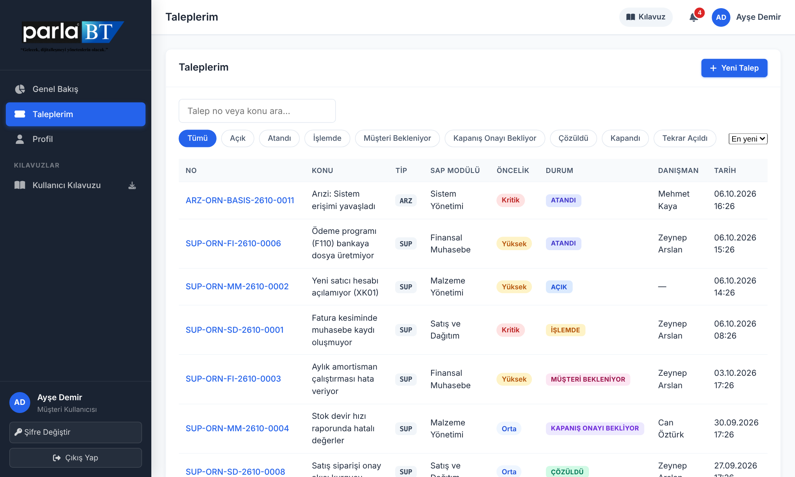
12345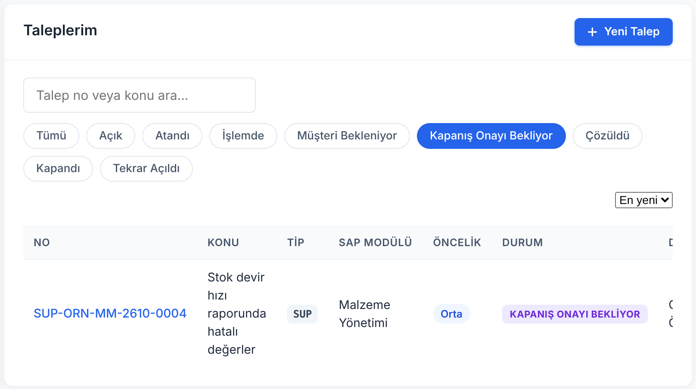
12Günün başında “Müşteri Bekleniyor” ve “Kapanış Onayı Bekliyor” çiplerine bakın: bunlar sizden bir işlem bekleyen taleplerdir. Çözümü sizin onayınız bekliyorsa süreç ilerleyemez.
Her talep numarası, talebin kimliğini özetleyen beş parçadan oluşur:
Örnek: SUP-ORN-FI-2610-0042 → Ekim 2026'da, ORN müşteri koduyla açılmış, FI modülüne ait 42. destek talebi.
Her talep çözüme kavuşana kadar aşağıdaki durumlardan geçer. Durum, listede ve ayrıntıda renkli rozetle gösterilir. Aşağıdaki akış tipik bir talebin yolunu gösterir:
| Durum | Ne anlama gelir? | Sizden beklenen |
|---|---|---|
| Açık | Talebiniz alındı, henüz danışman atanmadı. | Yok |
| Atandı | Bir danışman talebin sorumluluğunu aldı. | Yok |
| İşlemde | Danışman talep üzerinde çalışıyor. | Yok |
| Müşteri Bekleniyor | Çözümü denemeniz veya ek bilgi vermeniz gerekiyor. | Yanıt verin |
| Kapanış Onayı Bekliyor | Çözüm tamamlandı; kapatılması için onayınız bekleniyor. | Onaylayın veya yeniden açın |
| Çözüldü | Talep çözüldü olarak işaretlendi. | Kapatın / gerekirse yeniden açın |
| Kapandı | Talep tamamlandı ve kapatıldı. | Sorun tekrar ederse yeniden açın (14 gün) |
| Tekrar Açıldı | Talep yeniden açıldı; danışman yeniden inceliyor. | Yok |
Sayfanın sağ üstündeki zil simgesi, dikkatinizi gerektiren gelişmeleri toplar. Üzerindeki kırmızı rakam, okunmamış bildirim sayısıdır. Zile tıklayınca açılan panelde bildirimler yeniden eskiye sıralanır; bir bildirime tıklayınca ilgili talebe gidersiniz ve bildirim okundu sayılır.
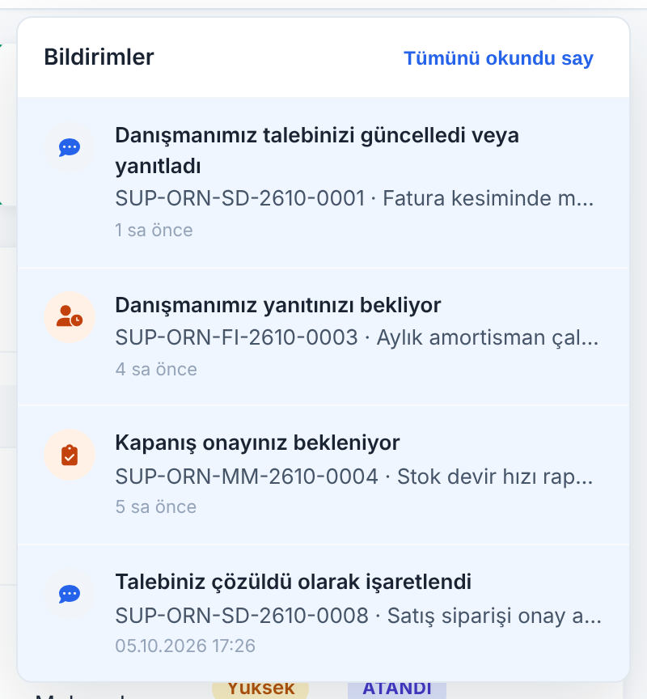
123| Bildirim | Anlamı | Ne zaman kaybolur? |
|---|---|---|
| Kapanış onayınız bekleniyor | Çözüm tamamlandı, onayınız gerekiyor. | Talebi onaylayınca veya yeniden açınca. |
| Danışmanımız yanıtınızı bekliyor | Test veya ek bilgi isteniyor. | Yanıt yazınca. |
| Danışmanımız talebinizi güncelledi veya yanıtladı | Yeni mesaj, durum veya öncelik değişikliği. | Talebi açınca veya “Tümünü okundu say” ile. |
| Talebiniz çözüldü / kapatıldı | Talep sonuçlandı. | Talebi açınca. |
Bildirim zili ilk kullanımda son 48 saati gösterir; “okundu” bilgisi tarayıcınızda saklanır. Farklı bir bilgisayardan girerseniz bildirimleri yeniden görebilirsiniz.
Önemli gelişmeler e-posta adresinize de gönderilir; böylece portalı açmasanız bile haberdar olursunuz. E-postalar Parla BT Destek <info@parlabilgiteknolojileri.net> adresinden gelir ve doğrudan yanıtlayabilirsiniz.
| E-posta başlığı | Ne zaman gelir? |
|---|---|
| Talebiniz alındı · numara | Talep oluşturulduğunda. |
| Yeni yanıt · numara | Danışmanınız talebe yanıt yazdığında. |
| Durum güncellendi · numara | Talebin durumu değiştiğinde (ör. işleme alındı). |
| İncelemeniz bekleniyor · numara | Danışman çözümü test etmenizi istediğinde. |
| Kapanış onayı · numara | Çözüm tamamlandığında ve onayınız gerektiğinde. |
| Talep çözüldü / Talep kapatıldı · numara | Talep sonuçlandığında. |
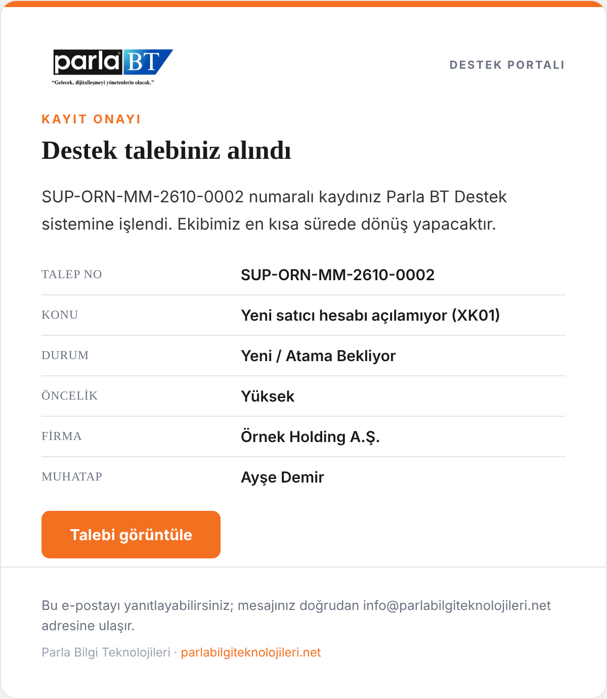
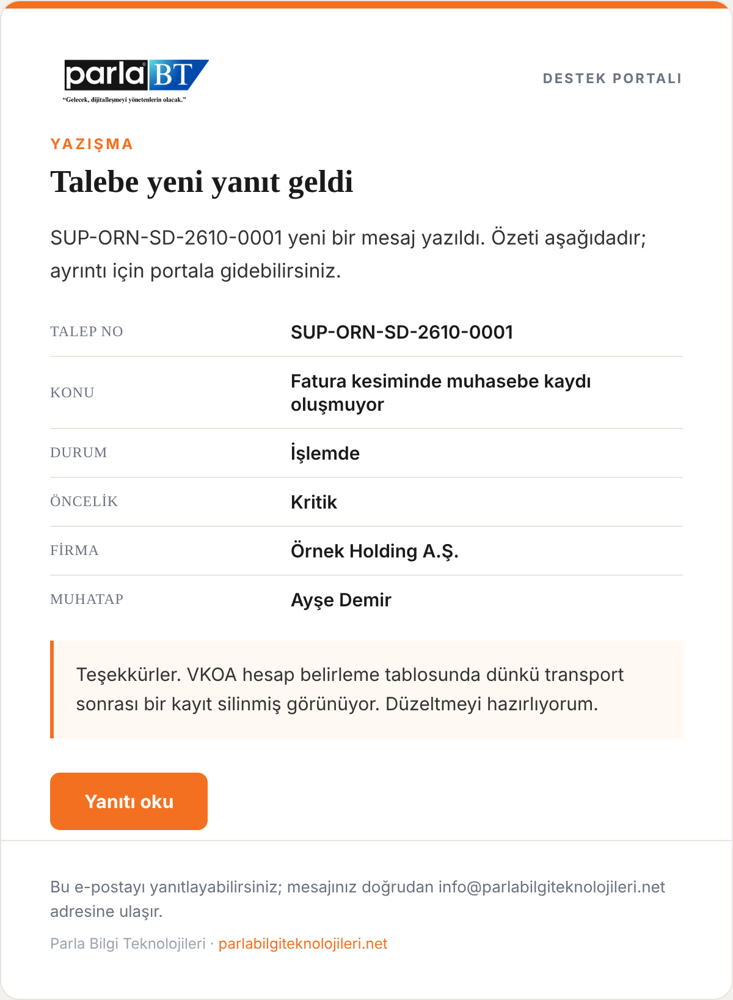
E-postalar gelmiyorsa önce gereksiz (spam) klasörünü kontrol edin ve info@parlabilgiteknolojileri.net adresini güvenli göndericiler listenize ekleyin. Kurumsal e-posta sisteminiz harici mesajları engelliyorsa BT biriminize başvurun.
Her talebin ayrıntı sayfasında, önceliğe göre belirlenen Hedef Süreler görünür: danışmanın talebe ilk yanıt vermesi ve talebi çözmesi için hedeflenen süreler. Süreler talebin açıldığı andan itibaren (takvim saati olarak) sayılır; danışman sizden yanıt beklerken (Müşteri Bekleniyor) süre duraklatılır.
| Öncelik | Hedef ilk yanıt | Hedef çözüm |
|---|---|---|
| Kritik | 1 saat | 8 saat |
| Yüksek | 4 saat | 24 saat |
| Orta | 8 saat | 72 saat (3 gün) |
| Düşük | 24 saat | 120 saat (5 gün) |
Hedef süreler portalın iç hedefleridir ve talep tiplerinden Destek, Arızi ve Hata kayıtları için geçerlidir. Sözleşmenizdeki hizmet seviyeleri ayrıca geçerlidir; ayrıntı için Parla BT hesap yöneticinizle görüşün.
Listeden bir talebe tıkladığınızda ayrıntı sayfası açılır. Burada talebin tüm bilgisi, yazışmalar ve geçmiş tek sayfada toplanır.
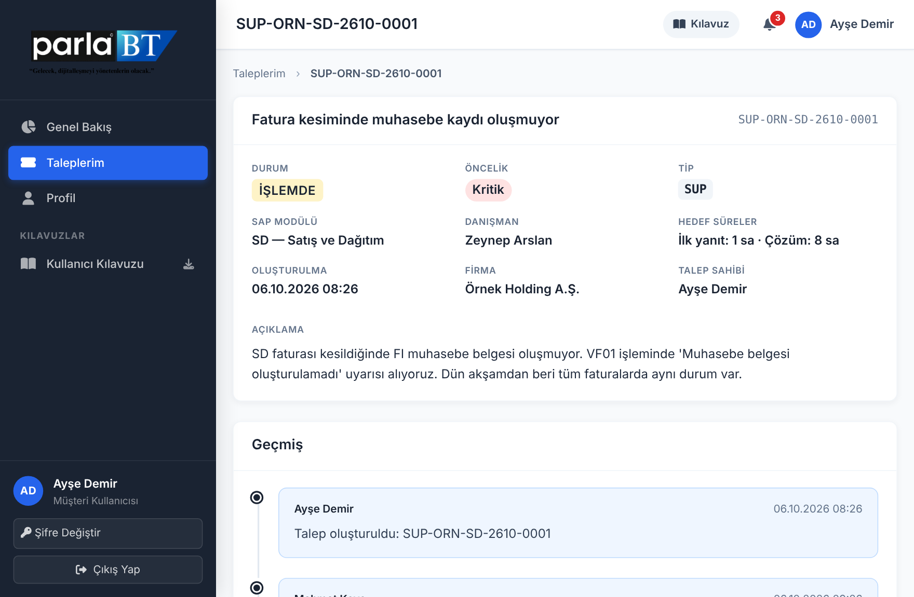
1234| Alan | Anlamı |
|---|---|
| Durum | Talebin aşaması (bkz. “Talep durumları”). |
| Öncelik | Açarken seçtiğiniz aciliyet; danışman gerekirse değiştirebilir. |
| Tip / SAP Modülü | Talebin kategorisi ve ilişkili SAP alanı. |
| Danışman | Talebin sorumlusu olan Parla BT uzmanı. Atanana kadar “—” görünür. |
| Hedef Süreler | İlk yanıt ve çözüm için hedeflenen süreler. |
| Oluşturulma | Talebi açtığınız tarih ve saat. |
| Firma / Talep Sahibi | Talebin ait olduğu firma ve talebi açan kişi. |
Talebe ilişkin tüm yazışma, sayfanın alt bölümündeki Mesajlar alanında yer alır. Yeni mesajlar altta görünür; sizin mesajlarınız ve danışmanın mesajları farklı renkte kutularla ayrılır.
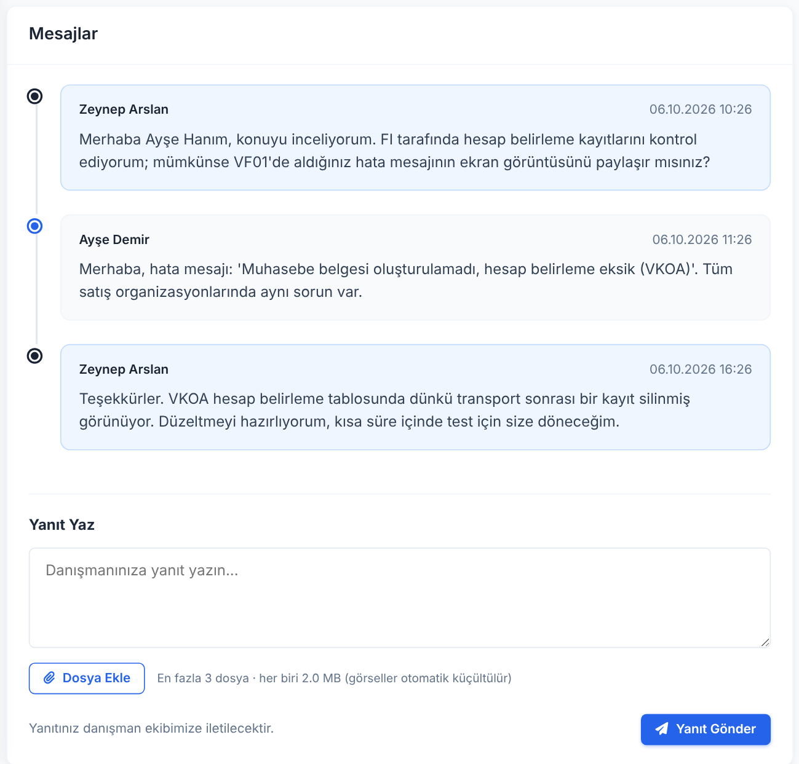
12345Yanıt Yaz alanına cevabınızı yazın. Danışmanınız bir şey sorduysa soruyu sırasıyla yanıtlayın; hata mesajı gibi bilgileri yapıştırın.
Dosya Ekle ile en fazla 3 dosya seçin. Yüklenen dosyalar mesajın altında etiket olarak görünür.
Yanıt Gönder düğmesine tıklayın. Danışmanınıza e-posta ve bildirim gider; talep “Müşteri Bekleniyor” durumundaysa otomatik olarak İşlemde durumuna döner.
Mesaj yazabilmek için talebin kapalı olmaması gerekir. Talep Çözüldü veya Kapandı durumundaysa yanıt kutusu yerine bir bilgi mesajı görünür; yazışmaya devam etmek için talebi yeniden açın (bkz. “Yeniden açma”).
Mesajlardaki dosyalar küçük etiketler (hata-ekrani.jpg) olarak görünür. Etikete tıklayın: görseller ve PDF'ler yeni sekmede açılır, diğer dosyalar bilgisayarınıza indirilir. Danışmanlarımızın size gönderdiği dosyaları da aynı şekilde açarsınız.
Tek mesajda tek konu yazın; sorulan soruları yanıtlayın; test sonuçlarını “çalıştı / çalışmadı + hata mesajı” biçiminde bildirin.
Aynı konuda yeni talep açmayın (mevcut talebe yazın); şifre ve kişisel verileri mesaj veya ekran görüntüsüne koymayın.
Talebin Geçmiş bölümü, mesajlardan bağımsız olarak talebin yaşam öyküsünü kaydeder: ne zaman açıldı, kime atandı, durumu ne zaman ve kim tarafından değiştirildi. Danışmanın durum değişikliği için yazdığı açıklamalar da burada görünür.
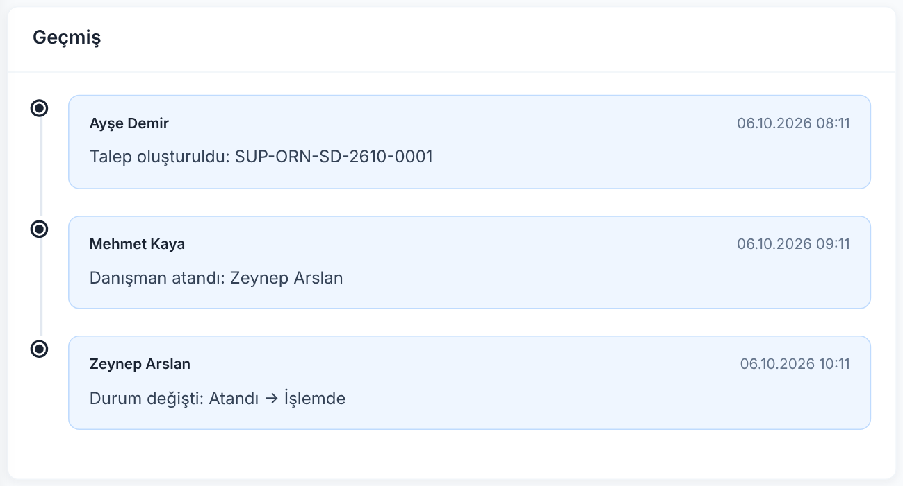
12Bir şeyin ne zaman olduğunu hatırlamaya çalışıyorsanız Geçmiş bölümü en güvenilir kayıttır; tarihler ve kişi adları değiştirilemez.
Talepler danışman tek taraflı kapatmaz: çözüm doğru çalışıyor mu, bunu en iyi siz bilirsiniz. Bu yüzden son söz sizdedir.
Danışmanınız çözümü hazırladığında talebi Müşteri Bekleniyor durumuna alabilir ve sizden test etmenizi isteyebilir. Talep sayfasının üstünde pembe bir bilgi bandı görünür; ayrıca “İncelemeniz bekleniyor” e-postası ve bildirim alırsınız.
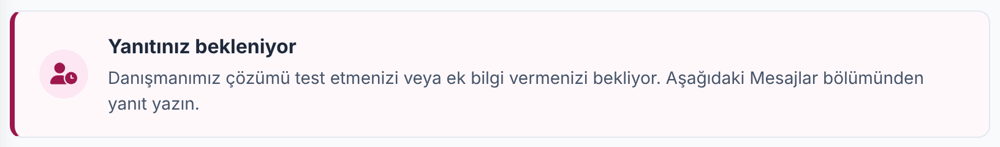
Danışmanın mesajında anlattığı adımları kendi SAP ortamınızda uygulayın.
Talepteki Yanıt Yaz alanına sonucu yazın: “çalıştı” veya “çalışmadı + hata mesajı”. Yanıtınızı gönderdiğiniz anda talep otomatik olarak İşlemde durumuna döner.
Çözüm sizin tarafınızdan doğrulandığında danışman talebi Kapanış Onayı Bekliyor durumuna alır. Bu aşamada talebin üstünde mor bir onay bandı belirir ve e-posta ile bildirim gelir.
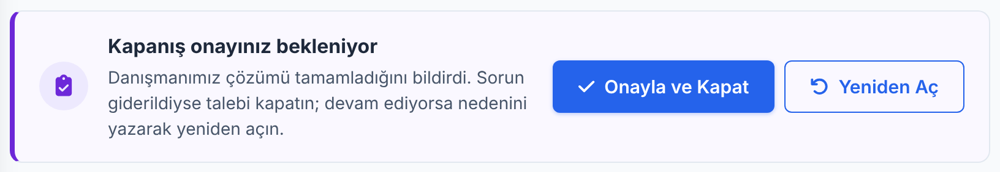
12Açılan pencerede isterseniz danışmanınıza kısa bir teşekkür veya not bırakın (isteğe bağlı).
Onayla ve Kapat düğmesine tıklayın. Talep Kapandı durumuna geçer; danışmanınıza kapanış bildirimi gider.
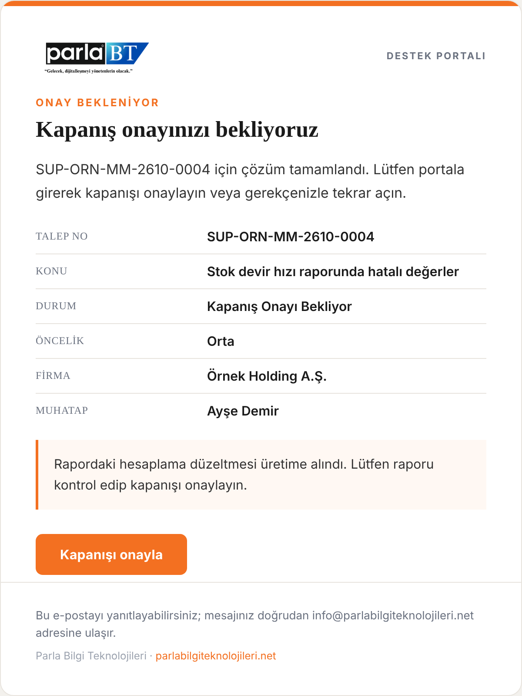
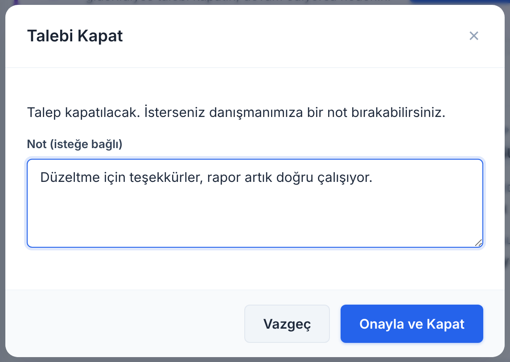
12Kapanış onayı verdiğinizde talep kapanır ve yeni yanıt yazamazsınız. Sorun tekrar ederse kapanıştan sonra 14 gün içinde talebi yeniden açabilirsiniz.
Çözüm sorununuzu gidermediyse veya sorun tekrarladıysa talebi yeniden açabilirsiniz. Böylece geçmiş yazışma ve dosyalar korunur; danışmanınız kaldığı yerden devam eder.
Onay bandındaki (veya Çözüldü / Kapandı bandındaki) Yeniden Aç düğmesine tıklayın.
Sorunun neden sürdüğünü en az 10 karakterle açıklayın. Gerekçeniz talebe mesaj olarak eklenir ve danışmanınızın e-postasına iletilir.
Yeniden Aç düğmesine tıklayın. Talep Tekrar Açıldı durumuna geçer ve atanmış danışmana bildirim gider.
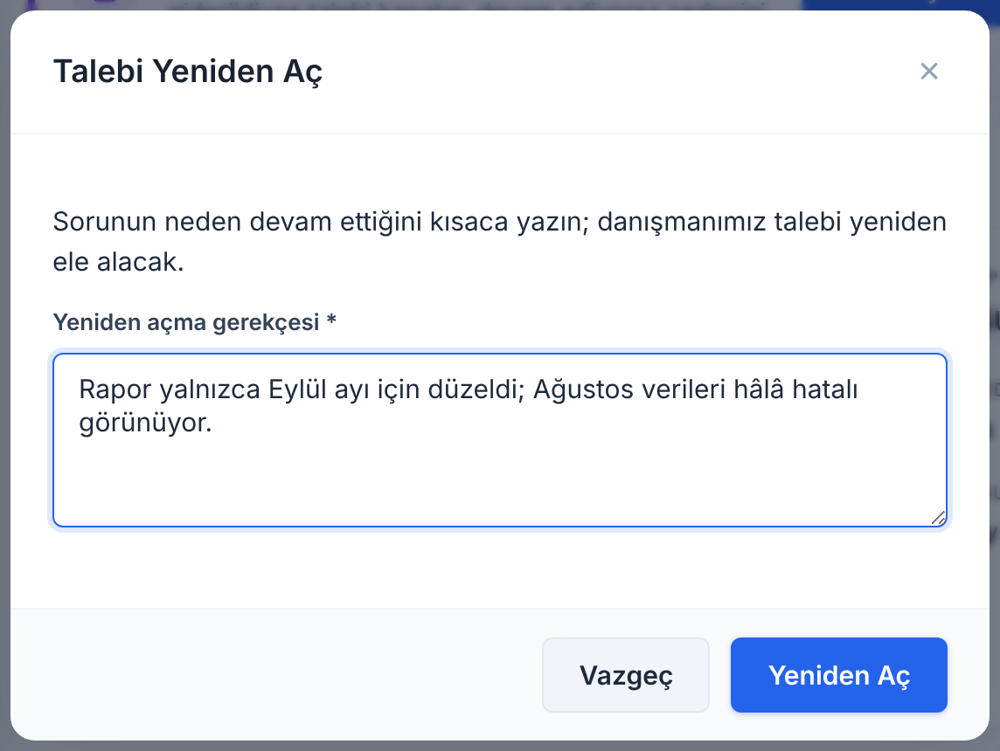
12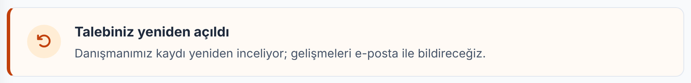
Danışmanınız bazı talepleri doğrudan Çözüldü olarak işaretleyebilir. Bu durumda da talebi kapatabilir veya yeniden açabilirsiniz. Kapanmış talepler için yeniden açma süresi kapanıştan sonra 14 gündür.
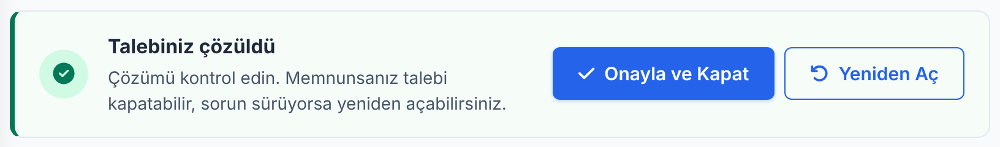
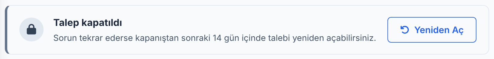
| Durum | Yanıt yazabilir miyim? | Yapabileceğiniz |
|---|---|---|
| Kapanış Onayı Bekliyor | Evet | Onayla ve Kapat · Yeniden Aç |
| Çözüldü | Hayır | Onayla ve Kapat · Yeniden Aç |
| Kapandı | Hayır | Yeniden Aç (14 gün içinde) |
| Tekrar Açıldı | Evet | Yazışmaya devam edin |
14 günlük süre dolduysa aynı sorun için yeni bir talep açın ve açıklamada eski talep numarasını belirtin; danışmanımız geçmişi görebilir.
Hesabınızın rolü Firma Yöneticisi ise Taleplerim sayfası Firma Talepleri olarak açılır ve yalnızca kendi taleplerinizi değil, firmanızın tüm kullanıcılarının taleplerini listeler. Böylece firmanızdaki konuları tek yerden izler, gerekirse meslektaşlarınız adına yanıt verir veya çözümü onaylarsınız.
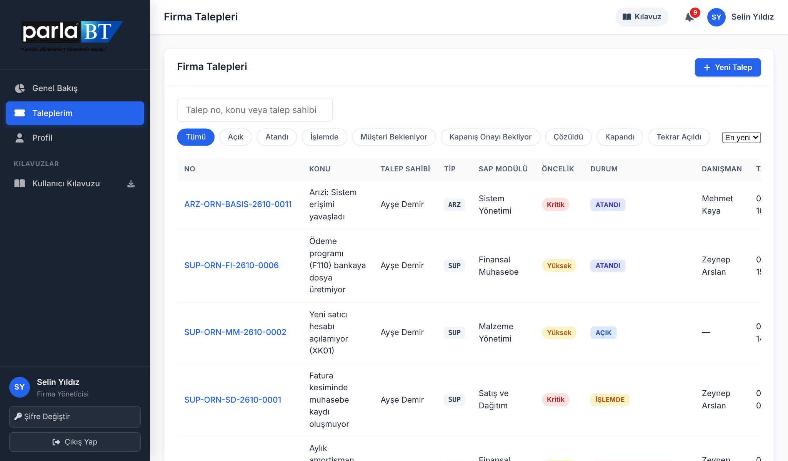
123| İşlem | Müşteri Kullanıcısı | Firma Yöneticisi |
|---|---|---|
| Kendi taleplerini görme | Evet | Evet |
| Firmadaki diğer kullanıcıların taleplerini görme | Hayır | Evet |
| Talep açma, yanıtlama, dosya ekleme | Evet (kendi talepleri) | Evet (firmanın tüm talepleri) |
| Kapanış onayı verme / yeniden açma | Evet (kendi talepleri) | Evet (firmanın tüm talepleri) |
| Dahili (personel) notlarını görme | Hayır | Hayır |
Firma yöneticisi rolünü Parla BT atar. Yeni bir yönetici belirlemek veya rolü değiştirmek için destek ekibimize e-posta gönderin.
sayfası hesap bilgilerinizi ve talep istatistiklerinizi gösterir. Bilgiler salt okunurdur; ad, telefon veya firma bilgilerinizde değişiklik gerekiyorsa Parla BT destek ekibine bildirin.
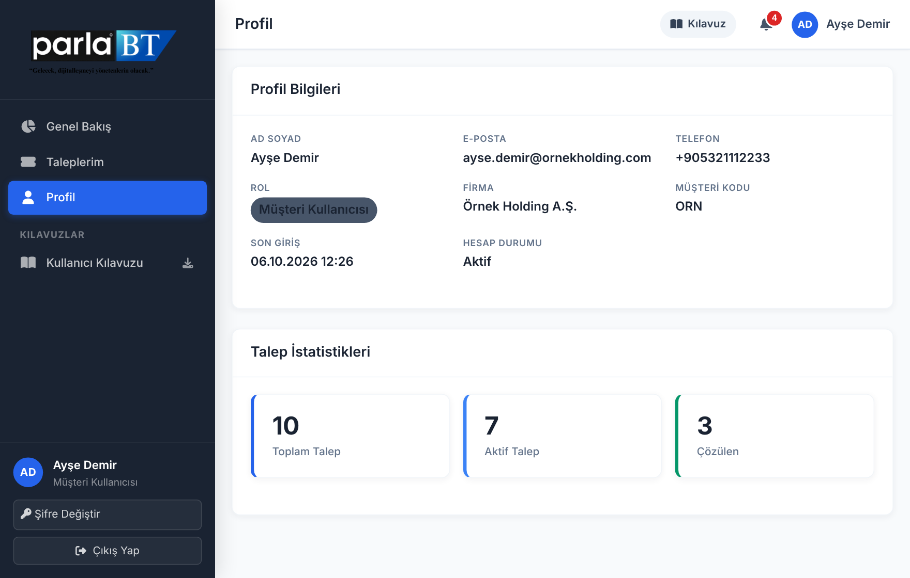
123Menünün altındaki Şifre Değiştir düğmesine tıklayın.
Mevcut şifre, Yeni şifre ve Yeni şifre (tekrar) alanlarını doldurun. Yeni şifre en az 8 karakter olmalı; en az bir büyük harf ve bir rakam içermelidir.
Şifreyi Güncelle düğmesine tıklayın. Güvenlik nedeniyle işlem için mevcut şifrenizi yeniden doğrulamanız gerekir.
Şifrenizi kimseyle paylaşmayın, bir yere not etmeyin; başka sitelerde kullandığınız şifreleri kullanmayın.
Ortak veya paylaşılan bilgisayarlarda işiniz bitince mutlaka Çıkış Yap'a tıklayın.
Mesaj ve ekran görüntülerinde şifre, TC kimlik numarası, maaş bilgisi gibi verileri gizleyin.
Parla BT çalışanları sizden hiçbir zaman şifrenizi istemez. Şifrenizi isteyen bir e-posta veya telefon aldıysanız yanıt vermeyin ve bize bildirin.
Hesabım yok, kendim kayıt olabilir miyim?
Hayır. Hesaplar Parla BT tarafından oluşturulur. Hesap talebi için hesap yöneticinize veya info@parlabilgiteknolojileri.net adresine yazın.
Şifremi unuttum, ne yapmalıyım?
Giriş sayfasında e-posta adresinizi yazıp Şifremi Unuttum'a tıklayın; sıfırlama bağlantısı e-postanıza gelir. Gelmezse spam klasörünü kontrol edin.
Yanlışlıkla iki kez talep açtım.
Mükerrer talebin numarasını bize e-postayla veya diğer talebe yazarak bildirin; danışmanımız birini kapatır. Siz talebi kendiniz silemezsiniz.
Talebimi açtıktan sonra düzenleyebilir miyim?
Konu ve açıklama değiştirilemez; eklemek istediğiniz her şeyi talebe yanıt olarak yazın, gerekirse dosya ekleyin. Böylece geçmiş bozulmaz.
Önceliği yanlış seçtim.
Talebe yazarak durumu belirtin; danışmanımız önceliği güncelleyebilir. Kritik bir durumsa ayrıca telefonla arayın.
Danışmanım kim, ona nasıl ulaşırım?
Atanan danışman talep ayrıntısında Danışman alanında görünür. Danışmanla yazışma talebin içinden yapılır; acil durumlarda +90 530 226 77 98 numarasından ulaşabilirsiniz.
Talebim neden hâlâ “Açık” durumda?
Talep henüz bir danışmana atanmamıştır. Atama genellikle kısa sürede yapılır; yüksek öncelikli taleplerde destek ekibi hemen devreye girer. Bir süre geçtiyse talebe kısa bir not yazabilirsiniz.
Kapanış onayını vermezsem ne olur?
Talep “Kapanış Onayı Bekliyor” durumunda kalır; yazışmaya devam edebilirsiniz. Çözümü kontrol edip onayladığınızda veya yeniden açtığınızda süreç ilerler.
Kapanmış talebi yeniden açamıyorum.
Yeniden açma süresi kapanıştan sonra 14 gündür. Süre dolduysa yeni bir talep açın ve açıklamada eski talep numarasını belirtin.
Dosyam yüklenmiyor.
Dosyanın 2 MB'tan küçük olduğundan ve desteklenen bir türde olduğundan emin olun (görsel, PDF, Office, TXT/CSV/LOG, ZIP). Büyük dosyalar için paylaşım bağlantısını Ek Bağlantı alanına yazın.
E-posta bildirimleri gelmiyor.
Spam klasörünüzü kontrol edin ve info@parlabilgiteknolojileri.net adresini güvenli göndericilere ekleyin. Sorun sürerse BT biriminize başvurun; portalı kullanmaya devam edebilirsiniz, bildirimler zilde de görünür.
Başka bir firmanın talebini görebilir miyim?
Hayır. Her firma yalnızca kendi taleplerini görür; müşteri kullanıcıları ise yalnızca kendi açtıkları talepleri görür (firma yöneticileri firmanın tüm taleplerini görür).
| Belirti | Olası neden | Çözüm |
|---|---|---|
| “E-posta veya şifre hatalı” | Yanlış şifre veya e-posta; Caps Lock açık. | Bilgileri kontrol edin; gerekirse Şifremi Unuttum. |
| “Çok fazla başarısız deneme” | Güvenlik amaçlı geçici kilit. | Birkaç dakika bekleyip tekrar deneyin. |
| “Hesabınız aktif değil” | Hesap devre dışı bırakılmış. | Parla BT destek ekibine yazın. |
| Sayfa boş veya yarım yükleniyor | Eski tarayıcı önbelleği veya bağlantı sorunu. | Sayfayı yenileyin (Ctrl + F5); güncel bir tarayıcı kullanın. |
| “Bu talebe erişim yetkiniz yok” | Başka kullanıcının talebi. | Talebi açan kişiyle veya firma yöneticinizle görüşün. |
| Talep gönderilemiyor | Zorunlu alan eksik veya metin kısa. | Kırmızı uyarılara bakın: konu en az 5, açıklama en az 20 karakter. |
| Şifre sıfırlama bağlantısı çalışmıyor | Süresi dolmuş veya daha önce kullanılmış. | Giriş sayfasından yeni bağlantı isteyin. |
| Terim | Açıklama |
|---|---|
| Talepticket | Portal üzerinden açtığınız her destek, arıza veya hata kaydı. |
| Danışman | Talebiniz için atanan Parla BT uzmanı. |
| Talep numarası | Talebin benzersiz kimliği (TİP-MÜŞTERİ-MODÜL-YYAA-SIRA). |
| SAP modülüFI, MM, SD ... | Sorunun ilişkili olduğu SAP uygulama alanı. |
| Öncelik | Talebin işinize etkisini belirten Düşük / Orta / Yüksek / Kritik seviyesi. |
| Hedef süre | İlk yanıt ve çözüm için önceliğe göre belirlenen hedef. |
| Kapanış onayı | Çözümün sizin tarafınızdan doğrulanması ve talebin kapatılması adımı. |
| Yeniden açma | Kapanmış/çözülmüş talebi, gerekçenizle tekrar aktif hale getirmek. |
| Dahili not | Yalnızca Parla BT personelinin gördüğü iç not; müşteriye gösterilmez. |
| Arızi talep | Destek sözleşmesi kapsamı dışındaki, tek seferlik hizmet talebi. |
info@parlabilgiteknolojileri.net
Talep numaranızı konuya yazın.
+90 530 226 77 98
Kritik taleplerde portala ek olarak arayın.